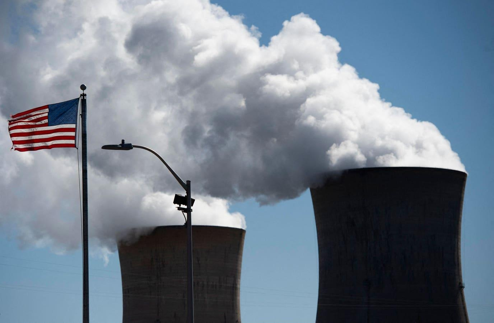

The U.S. Is Losing the Nuclear Energy Race to Russia and ChinaEven as Russia remains under unprecedented Western economic sanctions, the U.S. finds itself dependent on one Russian vital import: enriched uranium. The U.S. is the largest producer of nuclear energy in the world, but it has allowed its civilian nuclear infrastructure to languish since Jimmy Carter and Ronald Reagan’s presidencies in the 1970s and 1980s. While the U.S. has coasted on its laurels, with nuclear energy production not changing much in over 30 years, Russia continues its gradual climb upward and exports many reactors, while China is investing heavily in civilian nuclear tech and boosting its atomic power generation at home. Beijing plans to build 24 new nuclear power plants by 2030, bringing the total up to 60, overtaking the U.S. with its old reactor fleet. For comparison, the U.S. has 93 operational nuclear power plants in total, and in the same period as China’s building spree, the U.S. added 2 with none under development now. This decline is by choice. The U.S. certainly used to have the technical and financial resources to compete with Russia and China in these fields, but the political will to pursue nuclear power (despite its overwhelmingly green characteristics (zero CO2 emissions, and its exemplary safety record in North America) has been lacking. The notorious Three Mile Island accident in 1979, killed, injured, irradiated, or harmed zero people. Meanwhile, ballooning costs and the nightmare that is America’s byzantine environmental review and permitting processes resulted in the last nuclear power plant arriving 7 years late and 17 billion dollars over budget. It’s little surprise the U.S. is falling behind in many nuclear areas. “A generation of Americans were scared by Three Mile Island, and the nuclear industry became a political and environmental target”, said Jack Edlow of Edlow International, a company that specializes in the global transportation of nuclear materials and has been in the nuclear industry for 55 years. The average age of a nuclear reactor in the U.S. is 40 years old, meaning Russia and China have been able to take advantage of (often American) research into better reactors. The emerging technology of Small Modular Reactors (SMRs) and advanced generation four reactors are being embraced far quicker in China and Russia than in the U.S. SMRs are a popular option to advance clean and safe production, as they address multiple concerns about nuclear power. The ease of assembly and transport of SMRs changes the construction of a reactor from a multi-billion dollar, multi-year process into a shorter and cheaper endeavor with timelier returns. SMRs also lower environmental risks due to their anticipated reduced rate of accidents and lack of meltdown potential due to innovative technology. Additionally, environmental and aesthetic concerns are addressed by the ability of SMRs to be placed in remote areas, or underground. Despite the promise of SMRs and platitudes from the DOE on the subject, investments in SMRs lag far behind what is needed. Even with an updated fleet of reactors, the United States would still be falling behind Russia in its supply of high-assay, low-enriched uranium (HALEU), which is enriched up to 20% compared to the average 5% of uranium used in current reactors to allow more efficient units to function. The commercial supply of HALEU is currently controlled by TENEX, a division of the state-owned Russian nuclear energy company Rosatom. To bolster America’s domestic production, the Biden administration has put out an RFP for HALEU enrichment. The process of building a domestic supply will be difficult to jumpstart with only one U.S. company, Centrus Energy, being licensed to refine HALEU and one European company, Urenco, planning to start production in New Mexico. The RFP will allow many companies other than CENTRUS to bid for the new plant operation but operation is not likely to occur until the late 2020s. Building a new reactor is uniquely difficult in the United States due to its own self-imposed bureaucratic straight jacket. It takes an average 3.2 years to generate an environmental impact statement (EIS) for a new reactor – that is generate, not process. There are then years of additional Nuclear Regulatory Commission hearings to officially license any project. None of these concern safety – safety inspections occur independently of this process and largely function as designed, lasting only months. Then, years of public hearings susceptible and often systematically captured by private interests and militant environmentalists further delays construction, forcing the U.S. to burn coal and natural gas instead of the clean atom. What was once introduced to prevent government planners from running roughshod over communities has become a tool of privileged interests to block construction. This over-regulation does not protect the environment and deters private investment in green energy. All these problems stem from a lack of political will. Thankfully, the U.S. does seem to be slowly entering into a new chapter and re-embracing nuclear power. The Biden administration, in its pursuit of reducing greenhouse gas emissions by 50% from 2005 levels by 2030, has embraced nuclear energy with 6 billion dollars in aid going to the industry. This is not enough, as 62 billion dollars were allocated to renewables, especially solar and wind, but it is a good start. Congress needs to take a positive stand and vote on the requested funds to provide fuel development in the US. If it is serious, they need to act immediately. In December 2023, the U.S. House of Representatives passed a motion to ban U.S. uranium imports from Russia even though we do not have the capacity within the US to meet our own demand. American companies are on the technical edge of nuclear power, such as NuScale Power’s research into SMRs. Technology like that which NuScale proposes may be more expensive than anticipated, however, with significant price increases hindering the progress of planned projects. Decades of bipartisan policy failure will not be reversed with a deluge of legislation. A bipartisan consensus and presidential leadership are desperately needed for the vitally necessary American nuclear renaissance. To ensure the U.S. keeps its leading nuclear edge while maintaining its green energy ambitions, the U.S. needs to rediscover civilian nuclear power, support new generation of reactor designs, and streamline permitting and environmental review procedures. Unless it does so, no amount of laudable single-time subsidies will fix the decades -long morass that is U.S. nuclear energy. “We need to launch the new era of Atoms for Peace, and the US must lead this effort” concluded Jack Edlow. “The time is now” With Acknowledgement to Quin Buckley |
 |